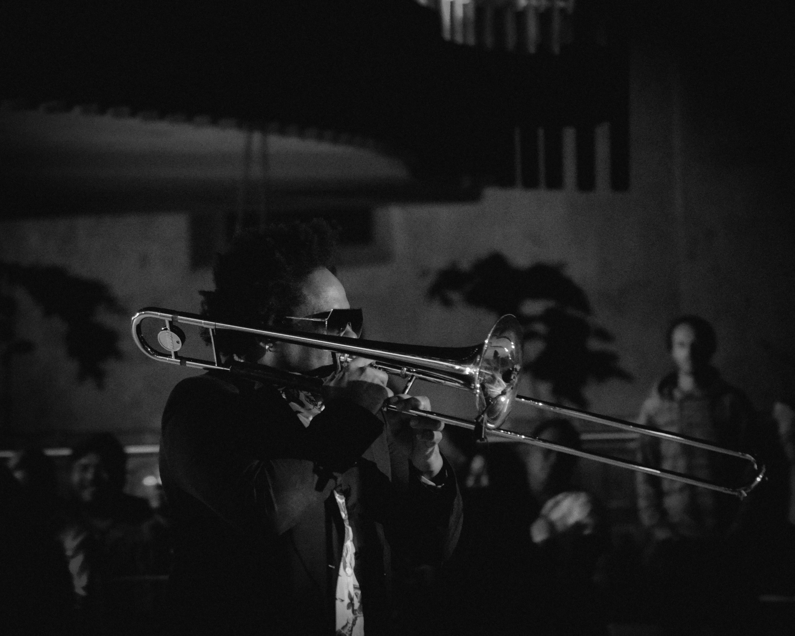
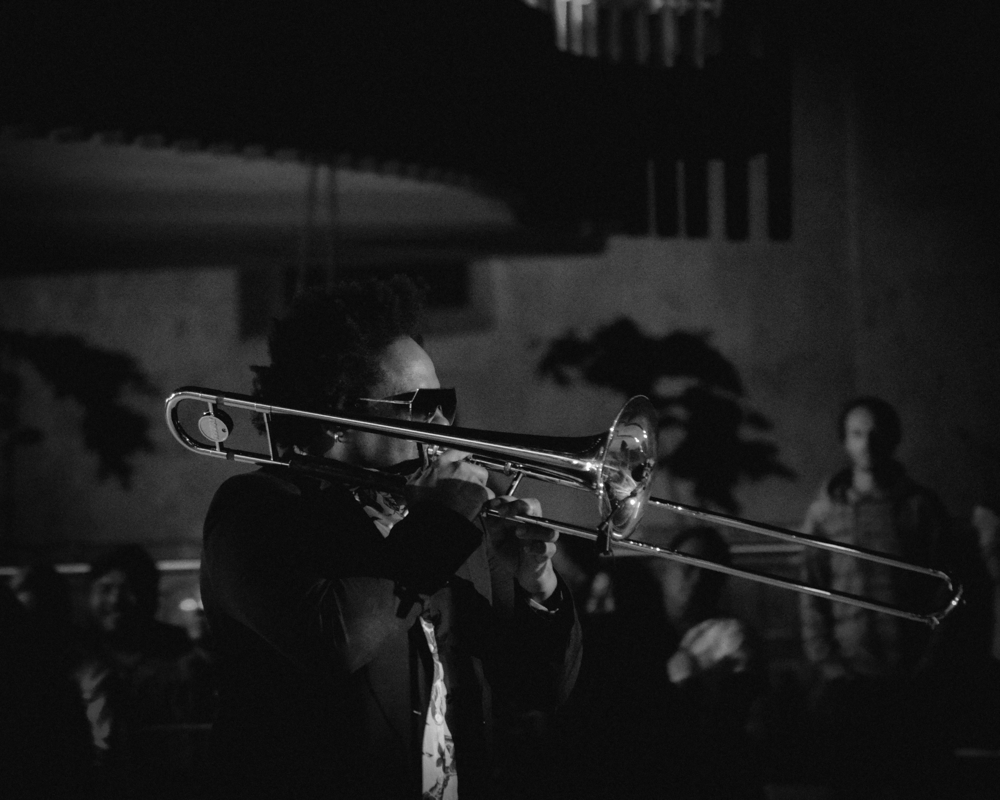

Importance of Music to Chicago
Music is an important aspect of the culture and community of Chicago. There are hundreds of live music venues throughout the city of Chicago. Here is a brief overview of a selection of live music venues in Chicago. This website does not include a comprehensive list of all venues, but a select variety of independently owned and operated venues and theaters in different parts of the city.
Importance of live music
Live music is important for both the artist and the people attending the concert. Artists are able to practice and continuously improve their playing and performance skills. It is also a large source of income for musicians. Not only does live music support the musician, it also is how sound engineers, technicians, and venue staff make a living. For the people attending concerts, music is a way of life. It fosters community and allows people to connect with different people and cultures.
Live music in Chicago
Music is an important part of Chicago’s history and culture. Specific styles of blues, Chicago style jazz, and house music were all developed in Chicago. According to the Chicago Journal, live music, including clubs, venues, and festivals have been bringing people together in Chicago since the late 1800s. Chicago is the home of hundreds of music venues. This ranges from small independent theaters to large stadiums. Independent theaters are important to the history of music in Chicago as they have supported up and coming artists, tour staff, and venue employees. They are part of developing the rich music culture in the city, and it is important to continue supporting these venues.
Image Gallery


 
